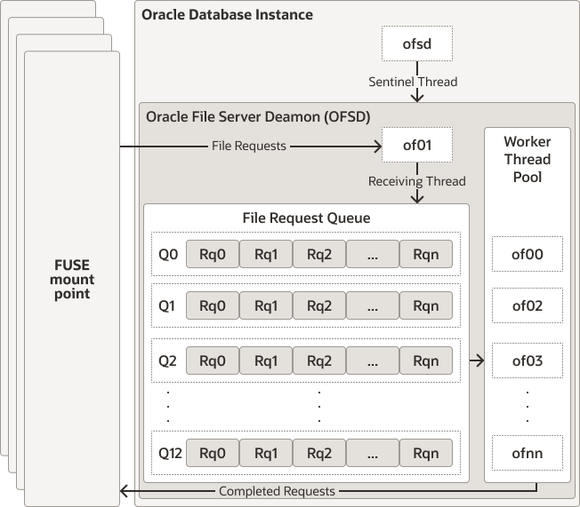

19 Using OFS
The OFS implementation includes creating and accessing the file system and managing it.
Topics:
- About OFS
Oracle File Server (OFS) addresses the need to store PDB specific scripts, logs, trace files and other files produced by running an application in the database. - About Oracle File Server Process
OFS manages the database file system using a non-fatal and dedicated background process called Oracle File Server Deamon (OFSD). - Limitations of using OFS
- OFS Configuration Parameters
The following table specifies the parameter that can be tuned to provide file system access for database objects using OFS. - Managing DBFS Locally Using FUSE
Understand how you can manage DBFS using Filesystem in User Space (FUSE). - OFS Client Interface
The OFS interface includes views and procedures that support OFS operations.
Parent topic: Oracle File System (OFS) Server
19.1 About OFS
Oracle File Server (OFS) addresses the need to store PDB specific scripts, logs, trace files and other files produced by running an application in the database.
Additionally, you can use OFS for the following tasks:
- As a staging area where you can host the source data before it is loaded into database tables.
- To store import or export files from Oracle Data Pump process.
Ensure that you do not place core database files such as data, redo, archive log files, and database trace file on OFS as this can produce a dependency cycle and cause the system to hang. Similarly, the diagnostic_dest initialization parameter that sets the location of the automatic diagnostic repository should not point to a directory inside OFS.
OFS provides methods and procedures to allow you to create a Database file system using storage that is part of the PDB. You can mount the created file system, unmount it like any other Unix file system using PL/SQL procedures, and destroy the file system when it is no longer in use. When the PDB is destroyed, the file system is also destroyed, which frees up the underlying storage space.
Parent topic: Using OFS
19.2 About Oracle File Server Process
OFS manages the database file system using a non-fatal and dedicated background process called Oracle File Server Deamon (OFSD).
For more information about background process, see Background Processes in the Database Reference guide.
When an instance starts, the OFSD process gets spawned on operating system platforms, such as Linux, where OFS is supported. OFSD is multi-threaded and non-fatal. It serves both file system management requests and file requests from each mounted file system.
The centralized server background process model of OFS allows multiple file systems to be mounted and accessed using a limited set of server threads. It allows better resource sharing and a linear scalability with new file server threads created on demand. Both memory and CPU used by these threads are controlled through system wide parameters set in the RDBMS instance.
OFSD process starts two types of threads: receiver thread and worker thread. The receiver thread receives requests from the mounted file system. The name of this thread name is similar to of01. The requests received by this thread are placed in a submit queue which is served by different worker threads. The submit queue is hash partitioned to efficiently distribute the incoming requests across all the worker threads. By default, OFSD starts 3 worker threads. You can update the value of the OFS_THREADS parameter to increase the number of worker thread.

OFSD supports these 2 types of file systems: DBFS and OFS.
Use the DBMS_FS PL/SQL procedures to create, mount, and work with the file systems managed by the OFSD process.
OFSD uses a pool of worker threads to serve requests from multiple file systems that are mounted on the instance. Use V$OFSMOUNT to query the mounted file systems. The response that is returned is specific to each PDB. It lists only the file systems that are mounted in the specified PDB.
Parent topic: Using OFS
19.3 Limitations of using OFS
Use of OFS is subjected to the following limitations:
-
DBFS mounted with ASM storage shows wrong mount size.
-
OFS mounted with local storage shows wrong mount size.
Parent topic: Using OFS
19.4 OFS Configuration Parameters
The following table specifies the parameter that can be tuned to provide file system access for database objects using OFS.
Table 19-1 OFS Configuration Parameters
| Parameter Name | Description |
|---|---|
|
|
Set the number of OFS worker threads to handle OFS requests. Enter an integer value in the range of 3–128. The default value is 4. Set the value for this parameter based on the total number of mounted file systems and the rate at which file operations are performed in each file system. Set this value after careful consideration as you can only increase this value dynamically and you cannot decrease it. If you set a high value for |
Note:
The diagnostic_dest initialization parameter sets the location of the automatic diagnostic repository. When you use dbfs_client or Oracle File Server (OFS) as the file system server, ensure that this parameter does not point to a directory inside dbfs_client or OFS as this can produce a dependency cycle and cause the system to hang.
Parent topic: Using OFS
19.5 Managing DBFS Locally Using FUSE
Understand how you can manage DBFS using Filesystem in User Space (FUSE).
The FUSE interface in the Linux kernel makes the file systems available to the operating system processes. After mounting the file system, you can export it, and then NFS mount it on other nodes where client applications can access this file system.
- Configuring FUSE
OFSD exposes the database file system through FUSE. Before using OFSD to mount the database file systems, you must install and configure the FUSE module. - Accessing OFS in Cloud
To access files from an OFS mounted on any Cloud environment, you must perform additional steps to configure the environment.
Parent topic: Using OFS
19.5.1 Configuring FUSE
OFSD exposes the database file system through FUSE. Before using OFSD to mount the database file systems, you must install and configure the FUSE module.
Parent topic: Managing DBFS Locally Using FUSE
19.5.2 Accessing OFS in Cloud
To access files from an OFS mounted on any Cloud environment, you must perform additional steps to configure the environment.
To access files in an OFS mount in the Cloud environment, you may need to perform additional configuration. It may not be possible to export the OFS mount point from database node to client node due to security reasons. This may hinder client applications from accessing OFS files through operating system commands and utilities and the OFS mount path may not be available to access using system calls. In such situations, Oracle recommends that you use the utl_file package to access files in the OFS mount. For information about UTL file package, see Summary of UTL_FILE Subprograms in PL/SQL Packages and Types Reference.
You can also use the impdp and expdp command-line clients to access files in the OFS mount. See Oracle Data Pump Import and Oracle Data Pump Export in the Utilities guide.
Do not access the OFS files by directly querying or modifying the DBFS tables. Do not use dbfs_client when the DBFS file system is mounted through OFS or else it could lead to metadata and data inconsistency. To access the OFS files, use the UTL_FILE package in addition to the procedures listed in the DBMS_FS package.
Parent topic: Managing DBFS Locally Using FUSE
19.6 OFS Client Interface
The OFS interface includes views and procedures that support OFS operations.
Topics:
- DBMS_FS Package
Use theDBMS_FSpackage to manage the file systems. Use the procedures in this package to create, mount, unmount and destroy a file system in the Oracle Database. - Views for OFS
The views that support OFS operations start withV$OFS.
Parent topic: Using OFS
19.6.1 DBMS_FS Package
Use the DBMS_FS package to manage the file systems. Use the procedures in this package to create, mount, unmount and destroy a file system in the Oracle Database.
PDBs can submit these jobs using the PL/SQL procedure and they are executed serially by the OFSD process.
See Also:
Oracle Database PL/SQL Packages and Types Reference for more information about Oracle OFS procedures.
The following example illustrates the use of DBMS_FS package.
BEGIN
DBMS_FS.MAKE_ORACLE_FS (
fstype => 'dbfs',
fsname => 'dbfs_fs1',
mount_options => 'TABLESPACE=dbfs_fs1_tbspc');
END;
/
BEGIN
DBMS_FS.MOUNT_ORACLE_FS (
fstype => 'dbfs',
fsname => 'dbfs_fs1',
mount_point => '/oracle/dbfs/testfs',
mount_options => 'default_permissions, allow_other');
END;
/
/************** Now you can access the file system. All the FS operations go here ***************/
BEGIN
DBMS_FS.UNMOUNT_ORACLE_FS (
fsname => 'dbfs_fs1',
mount_point => '/oracle/dbfs/testfs',
mount_options => 'force');
END;
/
BEGIN
DBMS_FS.DESTROY_ORACLE_FS (
fstype => 'dbfs',
fsname => 'dbfs_fs1');
END;
/
Parent topic: OFS Client Interface
19.6.2 Views for OFS
The views that support OFS operations start with V$OFS.
Table 19-2 Fixed Views for OFS
| View | Description |
|---|---|
V$OFSMOUNT |
Query this view to retrieve details about the file systems that are mounted by Oracle File System. For information about the columns and data types of this view, see V$OFSMOUNT in Oracle Database Reference. |
V$OFS_STATS |
Query this view to list the number of times each file operation has been called for a mount point. For information about the columns and data types of this view, see V$OFS_STATS in Oracle Database Reference. |
Parent topic: OFS Client Interface